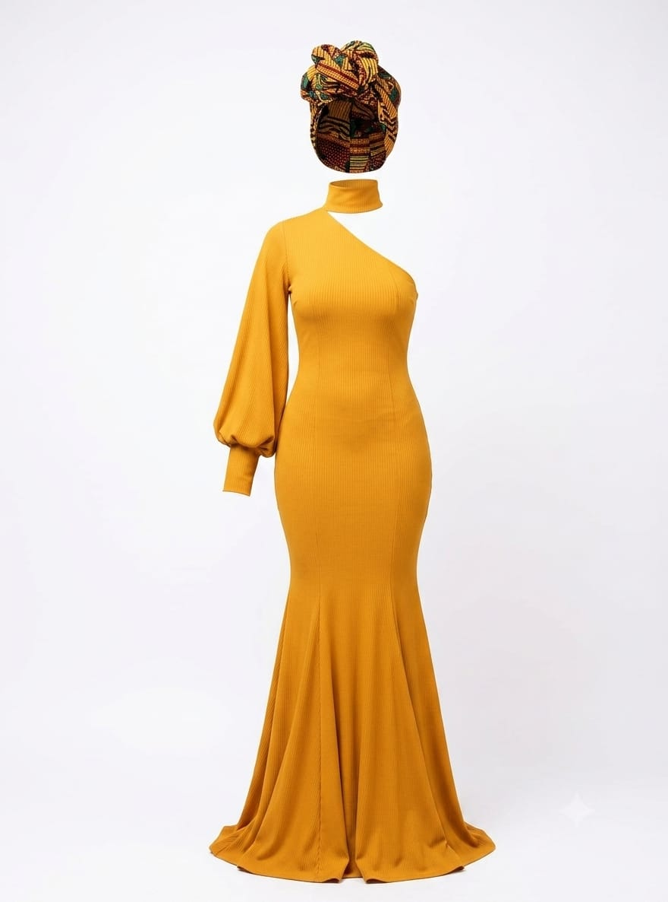

The Signature Look
A refined silhouette, striking texture, and deliberate craftsmanship make this piece feel both regal and modern. It is the kind of outfit that turns ordinary moments into a statement.
Iscah Tuzo
Luxury reimagined
Every look is shaped with elegance, confidence, and a golden glow that speaks before you do. This collection brings together polished detail and striking simplicity.
The spirit of the brand is rooted in grace, ambition, and a touch of drama, designed for people who want their style to feel as memorable as their presence.

A refined silhouette, striking texture, and deliberate craftsmanship make this piece feel both regal and modern. It is the kind of outfit that turns ordinary moments into a statement.

From the gleam of gold detail to the calm confidence of pure white tones, this aesthetic balances glamour and ease. It is polished, collected, and unapologetically memorable.
Crafted with purpose
Every fabric is chosen with intention, every line is shaped to create movement, and every finishing touch reflects that golden edge of distinction. This is style that does not shout—it commands attention.
Whether worn for a grand occasion or a quiet evening out, the collection brings warmth, sophistication, and a touch of opulence into every day.